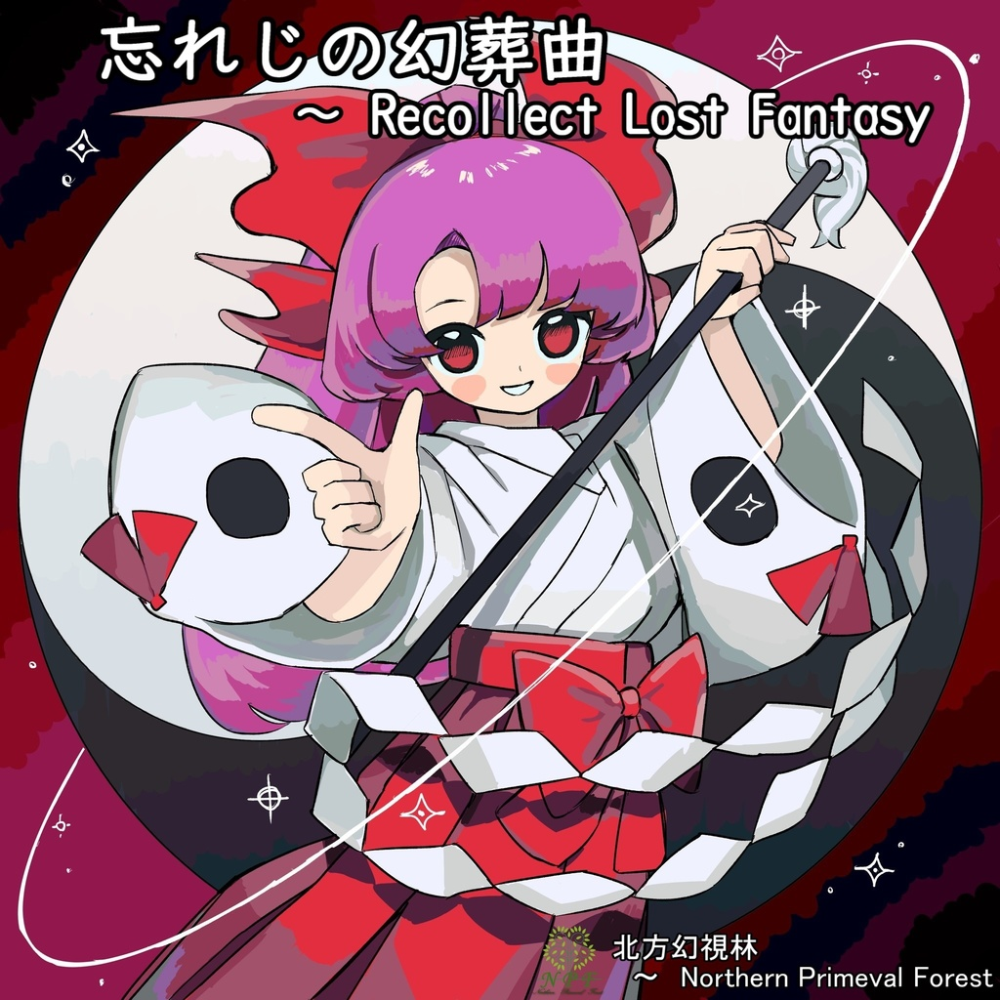

忘れじの幻葬曲 ～ Recollect Lost Fantasy

前代未聞の旧作未使用曲オンリーの合同アルバムです。
このCDは、参加者6人で制作されたものです。自分は、1、6、7トラックを担当しました。アンソロジーとかなり勝手が違っていたので、とても苦労しました。
CDを出すのは夢だったので今回叶えられてとても嬉しいです。また、自分でも出してみたいと思います。
| 型番 | NPFM-0003 |
|---|---|
| タイトル | 忘れじの幻葬曲 ～ Recollect Lost Fantasy |
| 種別 | 東方旧作未使用曲オンリー |
| 音楽ジャンル | ALL MIX |
| 初頒布 | 2020/10/09 第18回東方紅楼夢 そ05-a 2020/10/23 第九回博麗神社秋季例大祭 お23a |
| メディア | CD-R一枚組 |
| ジャケットデザイン | ねるぞう |
| 頒布価格 | 1000円 |
| ショップ価格 | 1500円 |
・Crossfade Sample
Track List
NPFM-0003 "忘れじの幻葬曲 ～ Recollect Lost Fantasy" 収録曲一覧
-
1. 博麗神社境内(trance style mix) / mixtuti桜餅
東方封魔録「博麗神社境内」
-
2. The Sun Sets / Artemis
東方封魔録「陽落ちて」
-
3. 封魔伝承 ～ Sealed Dream / 北逸レイ
東方封魔録「封魔終演」
-
4. Swingin' all night / Artemis
東方幻想郷「Lotus Road」
-
5. 装飾合戦 / SABA
東方幻想郷「装飾戦 ～ Decoration Battle（未使用バージョン）」
-
6. Dreamy pilot(Hard Style mix) / mixtuti桜餅
東方幻想郷「Dreamy pilot」
-
7. Inc0mpleτe Ploτ / mixtuti桜餅
東方幻想郷「Incomplete Plot」
-
8. ✝992 -The Lost Melody / ヨシアミ
東方幻想郷「Border Land」
-
9. Inanimate Concerto / 蓮々
東方幻想郷「幽夢 ～ Inanimate Dream（未使用バージョン）」
-
10. ✝888 -raspberry / ヨシアミ
東方幻想郷「Magic Shop of Raspberry」
-
11. 夢幻彎月 ～ Immature Moon / 北逸レイ
東方幻想郷「Crescent Dream」
-
12. 懐かしき時の風 / SABA
東方夢時空「時の風」
-
13. Romancium / Artemis
東方夢時空「スターボウドリーム」
-
14. PhantasMemoria / 蓮々
東方夢時空「Phantasmagoria」
-
15. ✝732 - Hammond / ヨシアミ
東方靈異伝「風の神社」
備考 (Notes)
- いかなる理由にかかわらず許可無くWebへアップロードする行為を固く禁じます。
- この作品は非公式の二次創作物です。題材となります各企業および関連会社の公認作品ではございません。